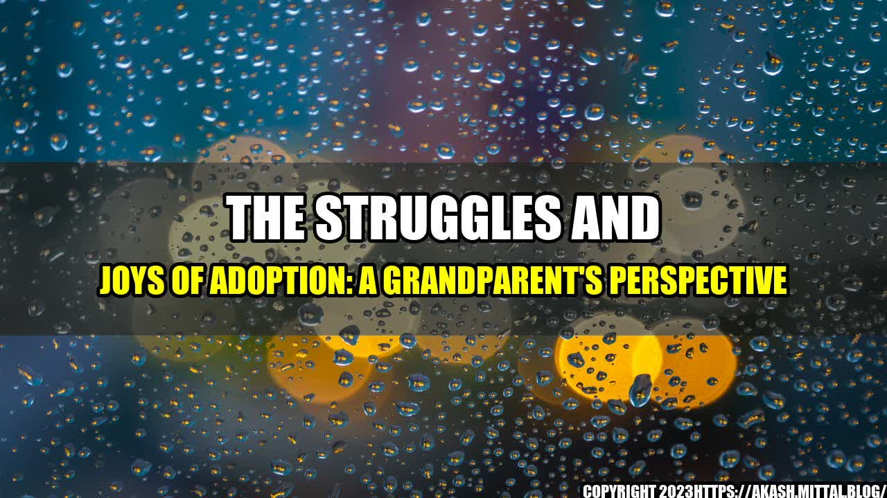

The Struggles and Joys of Adoption: A Grandparent's Perspective
When my daughter and son-in-law decided to adopt a child, I was thrilled. As a grandparent, I couldn't wait to welcome my new grandchild into the family. But as I soon learned, adoption is not without its challenges. Through my own experiences and conversations with other adoptive grandparents, I've come to understand both the struggles and the joys that come with adoption.
The Adoption Process Can Be Difficult
Adopting a child is not a simple process. My daughter and son-in-law had to go through months of paperwork, background checks, and interviews before they were even considered as potential adoptive parents. It was a stressful and emotional process that often left them feeling frustrated and hopeless.
But they persevered, and after nearly a year of waiting, they were matched with a beautiful baby boy. The feeling of finally becoming parents was indescribable.
Adoption Can Come with Unexpected Challenges
One of the challenges that my daughter and son-in-law faced after adopting their son was navigating the complex relationships involved in adoption. They had to learn how to communicate with their son's birth mother and navigate her involvement in their lives.
They also faced challenges related to their son's health. As an adopted child, he had a higher risk for certain health issues, and they had to learn how to navigate the healthcare system to get the best care for their son.
But despite these challenges, my daughter and son-in-law continued to feel immense joy in their new role as parents.
The Joys of Adoption Are Many
As a grandparent, I have witnessed firsthand the love and joy that come with adopting a child. Watching my daughter and son-in-law become parents has been one of the most rewarding experiences of my life.
I've also seen how adoption has enriched our entire family. Our new grandchild has brought us all closer together, and has given us a new sense of purpose and joy.
And perhaps most importantly, adoption has given my daughter and son-in-law the chance to become parents and to provide a loving home for a child who needed one.
Conclusion
Adoption can be a challenging and emotional process, but the joys it brings are immeasurable. As a grandparent, I've seen firsthand how adoption has enriched our family and brought us all closer together. If you're considering adoption, know that it won't be easy, but it will be one of the most rewarding things you'll ever do.
- The adoption process can be difficult and emotional, but it's worth it.
- Adoption can come with unexpected challenges, but perseverance and patience can help you overcome them.
- The joys of adoption are many, and can bring your family closer together.
References:
Hashtags:
- #adoption
- #fostercare
- #adoptionsupport
- #family
- #parenting
- #grandparenting
Category:
Social Issues
Curated by Team Akash.Mittal.Blog
Share on Twitter Share on LinkedIn